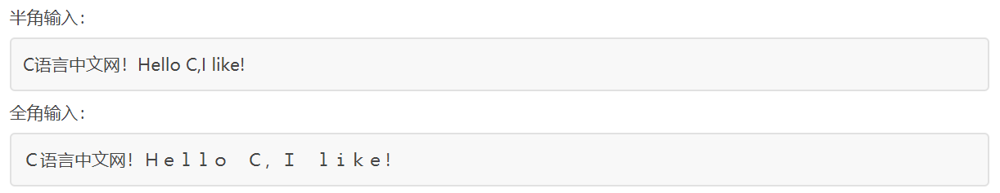

【本文结构】
- 1、C语言的三套标准：C89、C99和C11
- 2、选择英文半角输入法，严格区分中英文
- 3、程序安装是怎么回事
- 4、C语言程序的错误和警告
- 5、函数、库函数、头文件简介
- 6、C语言代码中的空白符
- 7、彩色版输出的C语言控制台程序
- 8、一个真正带界面的C语言程序
- 我们今天使用的 Windows、Linux、Mac OS 等操作系统都是由一种叫做 Unix 的系统演化而来。Unix 作为80年代主流的操作系统，是整个软件工业的基础，是现代操作系统的开山鼻祖，C语言就是为 Unix 而生的。
- Unix 和C语言的开发者是同一人，名字叫丹尼斯·里奇（Dennis MacAlistair Ritchie）。（ 2011年10月12日（北京时间为10月13日），丹尼斯·里奇去世，享年70岁。）
- C89 /ANSI C / ISO C/C90 标准
- 为统一C语言版本，1983 年美国国家标准局（American National Standards Institute，简称 ANSI）成立了一个委员会，专门来制定C语言标准。1989 年C语言标准被批准，被称为 ANSI X3.159-1989 "Programming Language C"。这个版本的C语言标准通常被称为 ANSI C。又由于这个版本是 89 年完成制定的，因此也被称为 C89。
- 后来 ANSI 把这个标准提交到 ISO（International Standardization Organization, 国际化标准组织），1990 年被 ISO 采纳为国际标准，称为 ISO C。又因为这个版本是1990年发布的，因此也被称为 C90。
- ANSI C（C89）与 ISO C（C90）内容基本相同，主要是格式组织不一样。
- C99 标准
- 1995 年C程序设计语言工作组对C语言进行了一些修改，增加了新的关键字，编写了新的库，取消了原有的限制，并于 1999 年形成新的标准——ISO/IEC 9899:1999 标准，通常被成为 C99。
- 但是这个时候的C语言编译器基本已经成熟，各个组织对 C99 的支持所表现出来的兴趣不同。当 GCC 和其它一些商业编译器支持 C99 的大部分特性的時候，微软和 Borland 却似乎对此不感兴趣，或者说没有足够的资源和动力来改进编译器，最终导致不同的编译器在部分语法上存在差异。
- C11 标准
- C11 标准由国际标准化组织（ISO）和国际电工委员会（IEC） 旗下的C语言标准委员会于 2011 年底正式发布，支持此标准的主流C语言编译器有 GCC、LLVM/Clang、Intel C++ Compile 等。
- C11 标准主要增加了以下内容：
- 增加了安全函数，例如 gets_s()、fopen_s() 等；
- 增加了 <threads.h> 头文件以支持多线程；
- 增加了 <uchar.h> 头文件以支持 Unicode 字符集；
- 以及其它一些细节。
- C语言并没有一个官方机构，也不属于哪个公司，它只有一个制定标准的委员会，任何其他组织或者个人都可以开发C语言的编译器，而这个编译器要遵守哪个C语言标准，是 100% 遵守还是部分遵守，并没有强制性的措施，也没有任何约束。
- 换句话说，各个厂商可以为了自己的利益、根据自己的喜好来开发编译器。
- 初学者经常会遇到这种情况，有些代码在微软编译器下能够正常运行，拿到 GCC 下就不行了，一堆报错信息；或者反过来，在 GCC 上能运行的代码在微软编译器下不能运行。这是因为不同的编译器支持不同的标准，并且每个编译器都进行了自己的扩展，假如你使用了微软编译器私有的扩展函数，那么拿到 GCC 下肯定是不支持的。
- 在编写代码的时候必须使用英文半角输入法，尤其是标点符号，初学者一定要引起注意。
- 全角和半角的区别
- 区别主要在于除汉字以外的其它字符，比如标点符号、英文字母、阿拉伯数字等，全角字符和半角字符所占用的位置的大小不同。
- 在计算机屏幕上，一个汉字要占两个英文字符的位置，人们把一个英文字符所占的位置称为“半角”，相对地把一个汉字所占的位置称为“全角”。
- 标点符号、英文字母、阿拉伯数字等这些字符不同于汉字，在半角状态它们被作为英文字符处理，而在全角状态作为中文字符处理。请看下面的例子：

- 另外最重要的一点是：“相同”字符在全角和半角状态下对应的编码值（例如 Unicode 编码、GBK 编码等）不一样，所以它们是不同的字符。
- 中文和英文模式下的制表符（键盘tab键）输入效果一致。
- 编程时，使用的英文引号，左引号和右引号的没有区别。
- 不同的操作系统，安装软件的方法虽然不一样，但基本原理是相同的，主要的思想就是将程序的二进制可执行文件拷贝到某个目录，设置一些路径。如果程序运行时需要一些库，将这些库拷贝到系统目录即可。
- 程序的安装基本上要经过下面四个步骤：
- 1) 将程序的可执行文件从安装包所在的位置，拷贝到要安装的目录。
- 2) 如果有必要，可以向系统目录拷贝一些动态链接库（DLL）。（可选操作）
- 3) 向系统注册表中写入相应的设置项，注册程序或者库的安装信息。（可选操作）
- 4) 在开始菜单或者桌面上位程序创建快捷方式。（可选操作）
- 由此可见，程序在安装前后并没有什么区别，只不过是进行了一些设置，有的设置是程序运行所必须的，有的是为了让用户更加方便。
- 这里我们教大家使用 VS2010 制作安装包。
【4 C语言程序的错误和警告】
- 错误（Error）表示程序不正确，不能正常编译、链接或运行，必须要纠正。
- 警告（Warning）表示可能会发生错误（实际上未发生）或者代码不规范，但是程序能够正常运行，有的警告可以忽略，有的要引起注意。
- 错误和警告可能发生在编译、链接、运行的任何时候。
- 函数（Function）： 在C语言中，有的语句使用时不能带括号，有的语句必须带括号。带括号的称为 函数（Function）。
- C语言提供了很多功能，例如输入输出、获得日期时间、文件操作等，我们只需要一句简单的代码就能够使用。但是这些功能的底层都比较复杂，通常是软件和硬件的结合，还要要考虑很多细节和边界，如果将这些功能都交给程序员去完成，那将极大增加程序员的学习成本，降低编程效率。
- 这些代码，早已被分门别类地放在了不同的文件中，并且每一段代码都有唯一的名字。使用代码时，只要在对应的名字后面加上( )就可以。这样的一段代码能够独立地完成某个功能，一次编写完成后可以重复使用，被称为 函数（Function）。读者可以认为，函数就是一段可以重复使用的代码。
- 返回值（Return Value）： 函数可以接收待处理的数据，同样可以将处理结果告诉我们；使用return可以告知处理结果。 return 可以翻译为“返回”，所以函数的处理结果被称为返回值（Return Value）。
- 函数调用（Function Call）： 使用函数在编程中有专业的称呼，叫做 函数调用（Function Call）。
- 库函数（Library Function）： C语言自带的函数称为库函数（Library Function）。
- 库（Library）是编程中的一个基本概念，可以简单地认为它是一些列函数的集合，在磁盘上往往是一个文件夹。
- C语言自带的库称为标准库（Standard Library），
- 其他公司或个人开发的库称为第三方库（Third-Party Library）。
- 库（Library）就是编程专家写好的代码，我们可以拿来直接使用，这样能够节省开发成本，提高开发效率，并且库代码的执行效率、严谨性、安全性和规范性要明显优于我们自己编写的代码，市场上有很多优秀的库，有的收费，有的免费，我们要善于利用这些库，尽量不要重复造轮子。
- 库一般分为两种：
- 编程语言的开发者在开发编程语言的时候，一般都要预先写好常用的代码，或者说常用的功能，例如输入输出、数学计算、文件操作、网络操作、日期时间、错误处理、字符串处理等，这些由官方编写的库称为标准库（Standard Library），它们随编程语言一起发布，可以认识是编程语言的一部分。
- 有一些组织机构或者个人也会开发一些库，有的是为了盈利，有的是业余爱好，有的是本公司正在使用的代码，开源出来造福人类，这些库称为第三方库（Third-party Library）。
- 自定义函数： 除了库函数，我们还可以编写自己的函数，拓展程序的功能。自己编写的函数称为自定义函数。
- 自定义函数和库函数在编写和使用方式上完全相同，只是由不同的机构来编写。
- 主函数（main 函数）： C语言规定，一个程序必须有且只有一个 main 函数。main 被称为主函数，是程序的入口函数，程序运行时从 main 函数开始，直到 main 函数结束（遇到 return 或者执行到函数末尾时，函数才结束）。 也就是说，没有 main 函数程序将不知道从哪里开始执行，运行时会报错。
- 头文件（Head file）： C语言开发者们编写了很多常用函数，并分门别类的放在了不同的文件，这些文件就称为头文件（header file）。每个头文件中都包含了若干个功能类似的函数，调用某个函数时，要引入对应的头文件，否则编译器找不到函数。
- 实际上，头文件往往只包含函数的说明，也就是告诉我们函数怎么用，而函数本身保存在其他文件中，在链接时才会找到。对于初学者，可以暂时理解为头文件中包含了若干函数。
- 引入头文件使用#include命令，并将文件名放在< >中，#include 和 < > 之间可以有空格，也可以没有。 头文件不是必须要引入的。
- 头文件以.h为后缀，而C语言代码文件以.c为后缀，它们都是文本文件，没有本质上的区别，#include 命令的作用也仅仅是将头文件中的文本复制到当前文件，然后和当前文件一起编译。你可以尝试将头文件中的内容复制到当前文件，那样也可以不引入头文件。
- .h中代码的语法规则和.c中是一样的，你也可以#include <xxx.c>，这是完全正确的。不过实际开发中没有人会这样做，这样看起来非常不专业，也不规范。
- 较早的C语言标准库包含了15个头文件，stdio.h 和 stdlib.h 是最常用的两个：
- stdio 是 standard input output 的缩写，stdio.h 被称为“标准输入输出文件”，包含的函数大都和输入输出有关，puts() 就是其中之一。
- stdlib 是 standard library 的缩写，stdlib.h 被称为“标准库文件”，包含的函数比较杂乱，多是一些通用工具型函数，system() 就是其中之一。
【6 C语言代码中的空白符】
- 空白符（Space Character）： 它们只用来占位，并没有实际的内容，也显示不出具体的字符，包括：
- 空格
- 制表符
- 制表符分为水平制表符和垂直制表符，它们的 ASCII 编码值分别是 9 和 11。
- 垂直制表符在现代计算机中基本不再使用了，也没法在键盘上直接输入，它已经被换行符取代了。
- 水平制表符相当于四个空格，对于大部分编辑器，按下 Tab 键默认就是输入一个水平制表符；如果你进行了个性化设置，按下 Tab 键也可能会输入四个或者两个空格。
- 换行符
- 程序员要善于利用空白符：缩进（制表符）和换行可以让代码结构更加清晰，空格可以让代码看起来不那么拥挤。专业的程序员同样追求专业的代码格式。